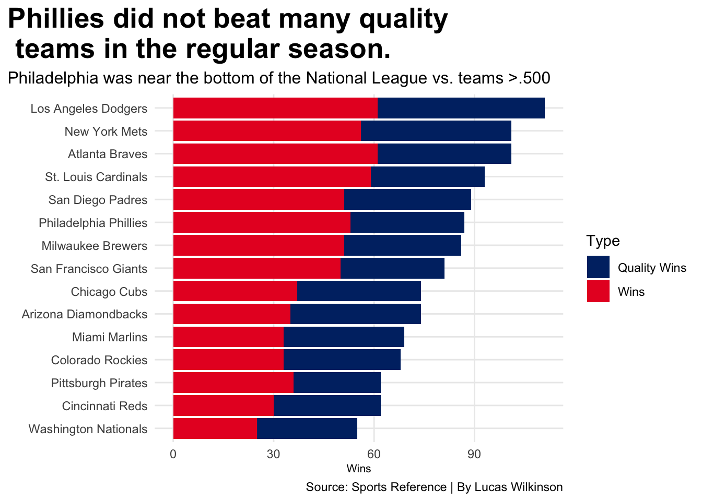

Registered S3 methods overwritten by 'ggalt':
method from
grid.draw.absoluteGrob ggplot2
grobHeight.absoluteGrob ggplot2
grobWidth.absoluteGrob ggplot2
grobX.absoluteGrob ggplot2
grobY.absoluteGrob ggplot2
library(gt)library(ggrepel)
NLStandings <-read_csv("~/Documents/SPMC 350 - Fall 2022/NationalLeagueStandings2.csv") %>%filter(Rk >0 )
Rows: 16 Columns: 30
── Column specification ────────────────────────────────────────────────────────
Delimiter: ","
chr (20): Tm, GB, GBsum, Strk, pythWL, vEast, vCent, vWest, Inter, Home, Roa...
dbl (10): Rk, W, L, W-L%, R, RA, Rdiff, SOS, SRS, Luck
ℹ Use `spec()` to retrieve the full column specification for this data.
ℹ Specify the column types or set `show_col_types = FALSE` to quiet this message.
Right here I want to make a table of the NL 2022 standings, with the Phillies highlighted Phillie color showing how they were mid during the regular season.
ggplot() +geom_bar(data=Stacked, aes(x=reorder(Tm,Total), weight=Total, fill=Type)) +scale_fill_manual(values =c("#002D72", "#E81828")) +coord_flip() +labs(x="", y="Wins", title="Phillies did not beat many quality \n teams in the regular season.", subtitle="Philadelphia was near the bottom of the National League vs. teams >.500",caption ="Source: Sports Reference | By Lucas Wilkinson") +theme_minimal() +theme(plot.title =element_text(size =20, face ="bold"),plot.title.position ="plot" , axis.title =element_text(size =8), plot.subtitle =element_text(size=12), panel.grid.minor =element_blank() )

I want to use team ERA and batting average to see if it correlates to wins, and I want to know where the Phucking Phillies are at on this list.
mlb_hitting <-read_csv("~/Documents/SPMC 350 - Fall 2022/MLB-HITTING.csv")
Rows: 30 Columns: 29
── Column specification ────────────────────────────────────────────────────────
Delimiter: ","
chr (1): Tm
dbl (28): #Bat, BatAge, R/G, G, PA, AB, R, H, 2B, 3B, HR, RBI, SB, CS, BB, S...
ℹ Use `spec()` to retrieve the full column specification for this data.
ℹ Specify the column types or set `show_col_types = FALSE` to quiet this message.
mlb_pitching <-read_csv("~/Documents/SPMC 350 - Fall 2022/mlb-pitching.csv")
Rows: 30 Columns: 36
── Column specification ────────────────────────────────────────────────────────
Delimiter: ","
chr (1): Tm
dbl (35): #P, PAge, RA/G, W, L, W-L%, ERA, G, GS, GF, CG, tSho, cSho, SV, IP...
ℹ Use `spec()` to retrieve the full column specification for this data.
ℹ Specify the column types or set `show_col_types = FALSE` to quiet this message.
combined <- mlb_hitting %>%inner_join(mlb_pitching, by =c("Tm", "G"))
ggplot() +geom_point(data=combined, aes(x=ERA, y=BA)) +geom_point(data=phils, aes(x=ERA, y=BA), color="#E81828") +coord_flip()+geom_point(data=phils, aes(x=`ERA`, y=`BA`), color="#E81828") +geom_text_repel(data=phils, aes(x=`ERA`, y=`BA`, label="Phillies")) +geom_vline(xintercept =3.96) +geom_hline(yintercept = .243) +labs(x="ERA", y="Offensive Batting Average", title="Philadelphia was average in team ERA, \nnot amazing at hitting.", subtitle="The Phillies had an okay regular season in many aspects.",caption ="Source: Sports Reference | By Lucas Wilkinson") +theme_minimal() +theme(plot.title =element_text(size =20, face ="bold"),axis.title =element_text(size =8, face ="bold"), plot.subtitle =element_text(size=10,) )